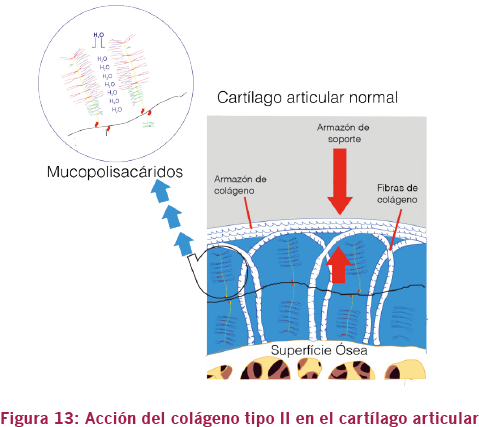
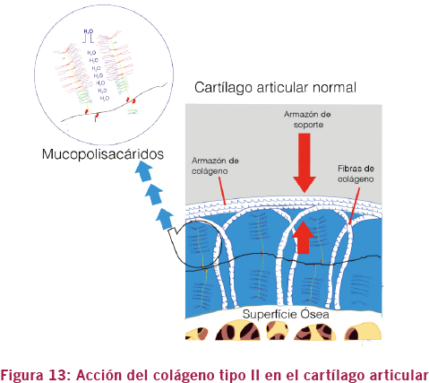

01. Anatomía y Fisiología
B. Sistema articular
Colágeno tipo II
El colágeno es la proteína más abundante del cuerpo humano, representando el 30% del total de proteínas. El colágeno es así llamado porque, cuando es sometido al calor del hervor, se transforma en un pegamento, o gelatina.
Las fibras de colágeno son muy importantes ya que ayudan en el apoyo y rigidez del cartílago. Las fibras de colágeno de tipo II son las más abundantes en el cartílago articular, representando aproximadamente el 60% del peso seco del cartílago, y se encuentran dispuestas de dos formas diferentes (Figura 13):
- La primera, formando verdaderos arcos de apoyo, que funcionan como resortes y ayudan en la absorción de impactos directos sobre el cartílago.
- La segunda, funcionando como un sistema hidráulico, formado no solamente por las fibras de colágeno como también por mucopolisacáridos, como el sulfato de glucosamina, el ácido hialurónico y el sulfato de condroitina; gracias a su característica líquida, le dan el carácter hidráulico al cartílago, funcionando como una esponja para disminuir el estrés mecánico.
 
